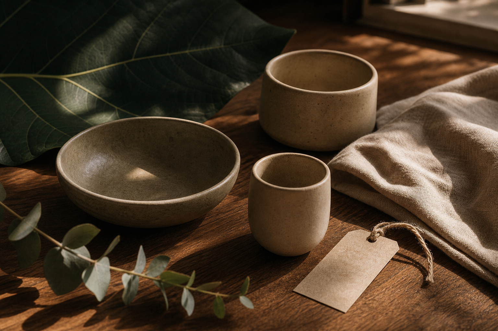
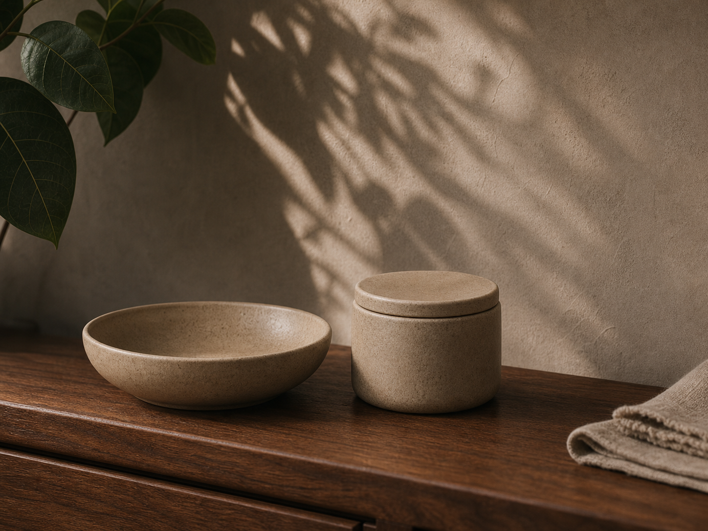
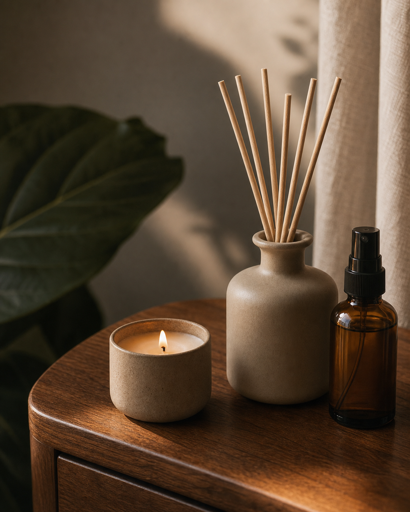
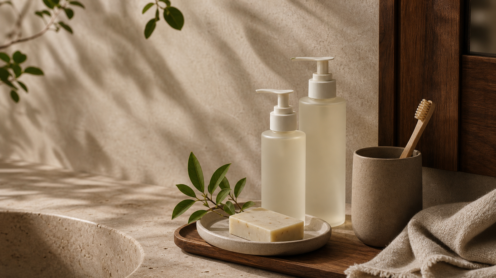
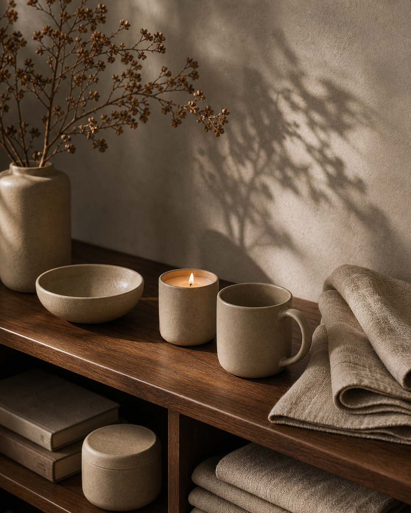
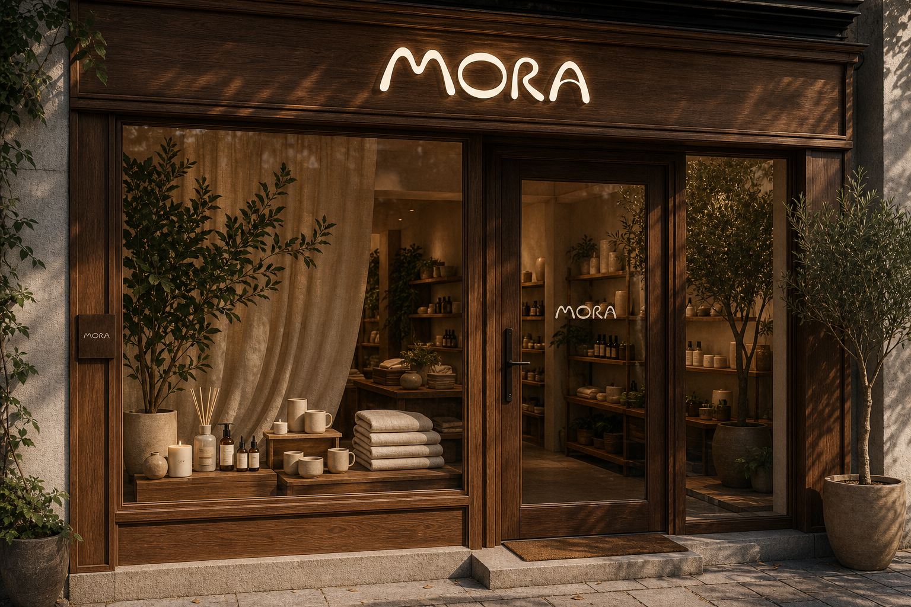

Hero / background
Ambient canvas
Layered image, organic linework, and restrained glass navigation keep the first impression tactile.

Shop
Natural home objects / since 2026
MORA creates ceramic, wood, scent, and care objects for homes that feel grounded, warm, and deliberately slow.
Leaf vein, walnut grain, linen touch, stone clay. Four quiet materials define the MORA home.
Inspired by nature. Made to last.
The brand language borrows from editorial calm, warm retail tactility, and photography-first product storytelling. Every surface keeps the logo soft, the palette earthy, and the interaction restrained.
Interface system
Layered image, organic linework, and restrained glass navigation keep the first impression tactile.
Soft segmented controls replace loud filters, keeping product browsing calm.
Image-led cards with only the essential product signal.
A conversion block that feels like an invitation, not a sales banner.
The collection

Matte clay surfaces for shelves, tables, and quiet corners.
A soft-grip daily cup with a raw mineral finish.

Wood, leaf, linen, and mineral notes for lived-in rooms.

Hand care and body rituals designed for sink-side visibility.
Shop edit
Morning Cup
Raw clay / 320mlRainwood Diffuser
Hinoki / linen / leafQuiet Vessel
Stone matte / oatMaterial language
MORA's palette avoids loud accent colors. Depth comes from touch: dark leaf, walnut brown, oat linen, and warm clay. The website follows the same rule.
Deep green surfaces, botanical shadows, subtle organic lines.
Warm walnut rhythm, visible grain, weight without heaviness.
Soft off-white grounds for breathing room and product contrast.
Matte ceramics and mineral surfaces that feel handmade, not rustic.
Atelier index
MORA objects are graded by tactility before shape: dry, warm, porous, quiet. The interface treats those qualities like product data, not decoration.
Deep green contrast, low gloss, and vein-like rhythm for shadowed surfaces.

Home ritual
A cup on the table. A vessel on the shelf. A scent after rain. MORA is designed for small domestic moments that do not need to perform.
The object earns its place when the table looks calmer after it arrives.
Quiet notes sit close to the room instead of announcing themselves.
Guests move through leaf shadow, ceramic weight, and walnut warmth.

MORA house
The retail space is imagined as a material library: walnut tables, clay objects, botanical shadows, and a scent bar at the center.
Book a visit